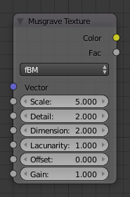
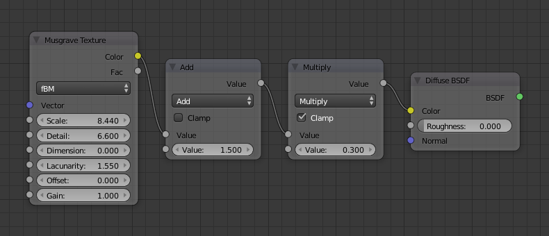

Musgrave Texture Node¶

Musgrave Texture Node.
The Musgrave Texture is used to add an advanced procedural noise texture.
Musgrave is a type of Fractal Noise. Simple Perlin Noise is generated multiple times with different scaling, and the results are combined in different ways depending on the Musgrave type. This results in a detailed texture with self-similar appearance at different scales, like fractals.
Inputs¶
- Vector
- Texture coordinate to sample texture at; defaults to Generated texture coordinates if the socket is left unconnected.
- Scale
- Overall texture scale.
- Detail
- Controls how many instances of base noise textures are combined. Each extra instance is scaled and adds smaller details.
- Dimension
- Controls the intensity of the different instances of base noise. Setting it to zero will use the same intensity for all noise instances. Larger values will reduce the intensity of finer (larger-scaled) instances, making smaller details less visible.
- Lacunarity
- Controls the scale of the different instances of the base noise. This is a factor for scaling each further instance, relative to the previous one, i.e. the scales grow exponentially. When setting it to 1 all instances have the same scale.
- Offset
- This value is added to each noise instance, determines the level where least fine noise will appear. It only has an effect for Hybrid Multifractal, Ridged Multifractal and Hetero Terrain.
- Gain
- An extra multiplier to change the intensity of finer noise instances. It only has an effect for Hybrid Multifractal and Ridged Multifractal.
Properties¶
- Type
Specifies different methods to combine the multiple noise instances. Originally, the algorithms for generating procedural terrain.
- fBM (fractal Brownian Motion)
- Produces a unnatural homogeneous and isotropic result. Uses a additive cascade, the values are simply added together.
- Multifractal
- The result is more uneven (varies with location), more similar to a real terrain. Uses a multiplicative cascade.
- Hybrid Multifractal
- Creates peaks and valleys with different roughness values, like real mountains rise out of flat plains. Combines the additive cascade with a multiplicative cascade.
- Ridged Multifractal
- Creates sharp peaks. Calculates the absolute value of the noise, creating "canyons", and then flips the surface upside down.
- Hetero Terrain (Heterogeneous Terrain)
- Similar to Hybrid Multifractal creates a heterogeneous terrain, but with the likeness of river channels.
Outputs¶
- Color
- Texture color output. It is grayscale, all three RGB components are equal to the value of the Factor output.
- Factor
- Texture intensity output.
Mẹo
The Musgrave Texture often needs some adjustments (e.g. by multiplication and addition) in order to avoid clipping and to see more detail.
Examples¶

Nodes for the image to the right. |

Musgrave texture. |


{kind=link}